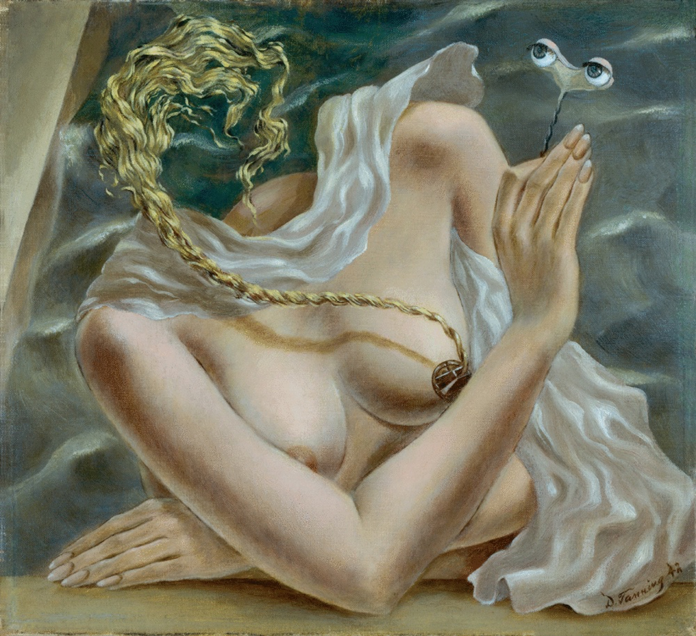

Lágrimas de Eros · Obra 109 de 121
Voltaje (Voltage)
Dorothea Tanning (1942)

Un cuerpo de mujer envuelto en un paño blanco, con una trenza que le cruza el pecho y un par de ojos sostenidos en alto por un alambre. Es un lienzo pequeño, de 1942. Bataille lo reproduce sin fecha y con una nota sobre la pintora.
Lo que hace que destaque
Un cuerpo de mujer envuelto en un paño blanco, con una trenza que le cruza el pecho y un par de ojos sostenidos en alto por un alambre. Es un lienzo pequeño, de 1942. Bataille lo reproduce sin fecha y con una nota sobre la pintora.
Contexto histórico
La ficha de la fundación no dice dónde está. Los centímetros son conversión propia.
Autoría y procedencia
Dorothea Tanning (1910-2012), pintora, escultora y escritora estadounidense, destacada representante del surrealismo internacional vinculada a Max Ernst.
En los libros
Las lágrimas de Eros, de Georges Bataille · Lámina de la p. 190
«Tras un periodo aparentemente tradicional (en el sentido en que es «tradicional» el arte de Balthus), su pintura alcanzó una profunda abstracción que conserva intacto su erotismo fundamental.»after an apparently traditional period (in the way Balthus's art is "traditional"), her painting attained a profound abstractness that holds intact its fundamental eroticism.Georges Bataille, «Las lágrimas de Eros» (1961), traducido al español de la ed. inglesa de City Lights (1989), p. 190
Ficha pendiente de contrastar con fuentes académicas.